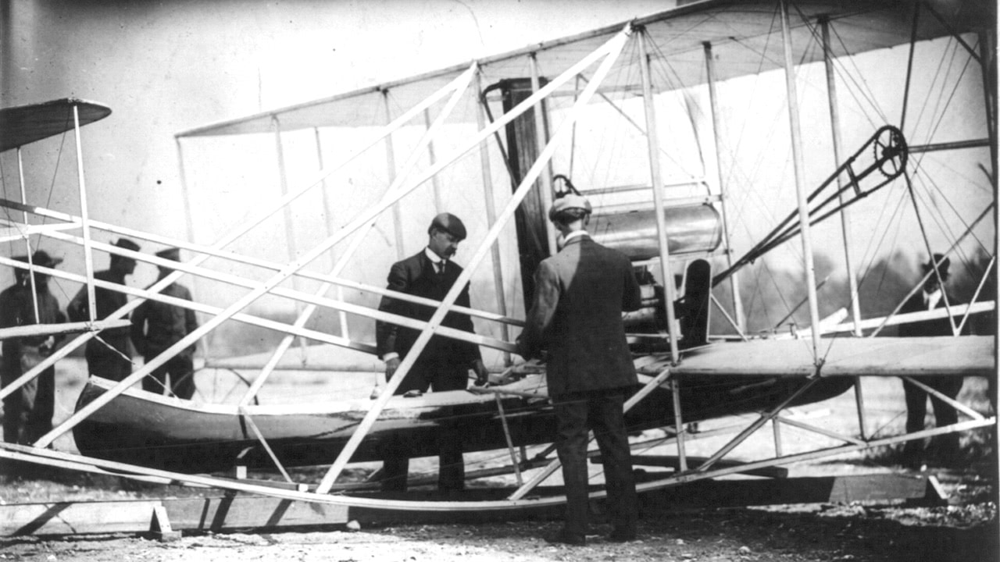
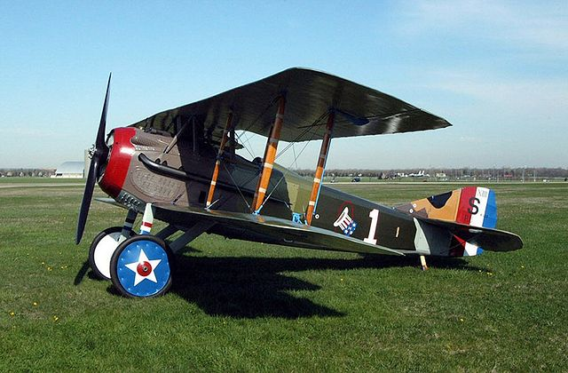
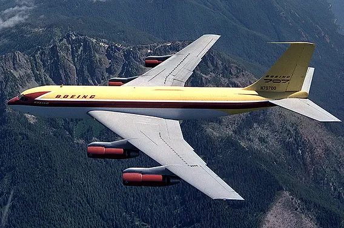
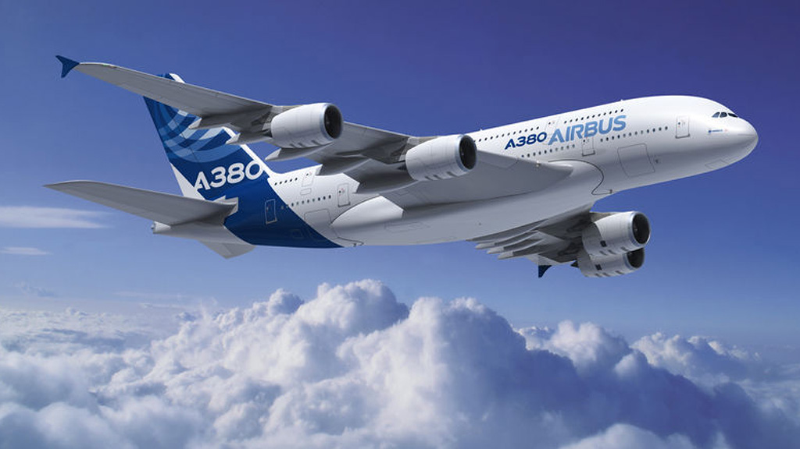

Conoce el origen y la evolucion de los aviones a traves del tiempo
Los hermanos Wright, Orville y Wilbur, son conocidos por haber construido el primer avión exitoso en 1903. El "Flyer" voló en Kitty Hawk, Carolina del Norte, y marcó el inicio de la aviación moderna.
El Flyer tenía un motor de 12 caballos de fuerza y alcanzó una velocidad de 12 kilómetros por hora.
Durante la Primera Guerra Mundial, la aviación dio un gran paso adelante con aviones como el Spad XIII y el Fokker Dr.I, usados para combate aéreo y misiones de reconocimiento.
Estos aviones eran significativamente más rápidos y maniobrables que los primeros modelos de la aviación civil.
Los años 30 y 40 fueron una época de avances tecnológicos en la aviación. Aviones como el Boeing 707 y el Supermarine Spitfire hicieron historia, llevando a la aviación comercial y militar a nuevas alturas.
El Boeing 707, lanzado en 1958, fue uno de los primeros aviones a reacción comerciales de éxito, marcando el comienzo de los vuelos de larga distancia.
Hoy en día, los aviones son una parte esencial del transporte global. Modelos como el Airbus A380 y el Boeing 787 Dreamliner son algunos de los aviones más avanzados tecnológicamente.
El Airbus A380, con capacidad para más de 800 pasajeros, es el avión comercial más grande del mundo.